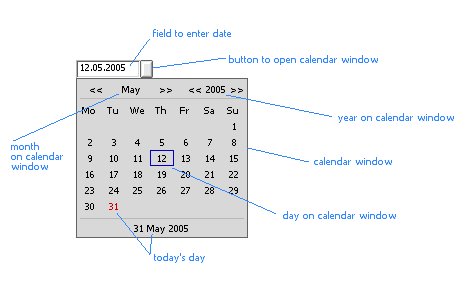

Calendar Control version 2.5
by Al.V. Sarikov.
Kherson, Ukraine, 2006.
E-mail: avix@ukrpost.net.
Home page: http://avix.pp.ru.Distributed under BSD license (see LICENSE file).
Derived from: BControl
Declared in: CalendarControl.h
Library: CalendarControl.a
Summary: more...
Calendar Control allows to work with dates: enter date to text field of control and choose date from calendar. Opened control (with BeOS interface) is shown on picture.

Control works with full and short date (when year is written as is or only with two last numbers). In first case dates from January 1 0001 till December 31 9999 are acceptable. In second case years will be in limits of one century: from 01st year of century to 00th year or from 51st year of one century to 50th year of next century (it depends upon century beginning flag which set in constructor). Months are numbered from 1 (January).
Date is entered to text field as usual text (but only numbers are allowed). If date has been entered incorrectly (month more than 12, day more than 31 and the like), it is automatically corrected by changing all wrong values to values of today's system date.
It is allowed to select text in text field, copy text or its part to Clipboard, delete symbols (instead of deleted number 0 is appeared). Inserting text is prohibited because it could make date in text field of control incorrect.
After clicking with mouse on button near text field (or pressing Ctrl+down arrow on keyboard) calendar window is opened. First calendar contains month and year which were entered to text field. Day entered to text field is framed with blue rectangle.
If month and year concur with month and year of system date today's day is written with red colour.
Navigation on calendar is realized with mouse or keyboard.
Clicking on arrows (symbols "<<" and ">>") near month user changes current month. The same clicking on arrows near year he changes year.
Click on string on the bottom of calendar window makes system date current in calendar (day, month, year). Final choosing date is made by clicking with mouse on necessary day while necessary month and year are current in calendar. Chosen date is placed to text field of calendar control.
If you navigate with keyboard you can use arrow keys (they move by days of month or change month or year depending upon where focus is), Tab or Shift+Tab keys (just change focus), Enter or Space (make today's date current or finally choose date, depending upon focus), ESC or Ctrl+up arrow (close calendar window without choosing date).
Making calendar window unfocused (by clicking with mouse out of it or if other window is activated) causes it to close without placing new date to text field of control.
History of versions:
Version 1.0:
- first version.
Version 2.0:
- possibility to work with dates in which year is written with two last numbers is added;
- keyboard navigation is added;
- some bugs (small and not) are corrected (and some other probably added :)), drawing control was improved;
- in addition to english and russian french version of control is made (at request of Eric Jourde and he gave necessary translations and abbreviations);
- some changes in API: functions GetFormat, SetFormat were removed, instead of them GetFlags(), SetFlags() are added;
- function SetDate() which accepts text string as parameter is added.
Version 2.1 (didn't distributed):
- changes in API: function TextView() is added;
- appearance of control is improved: inactive control looks other than active;
- some bugs which could bring to wrong representation of parts of control are corrected (thanks to Jan Bungeroth pointed out them);
- errors in working with leap years are fixed (thanks to Jan Bungeroth pointed out them);
- in special edition of version 2.1 code and options changing (if to compile in Zeta) appearance of control and making it localized with system means of Zeta (instead of english version) are added (proposed and developed by Jan Bungeroth).
Version 2.5:
- additional interface near to interface of such controls in Zeta is developed and included to code;
- possibility to choose interface of control depending upon system in which program with control is started is made (it is defined by parameters while compiling and flags of SetLook() function while running);
- it is added (as variant while compiling) localization with system means of Zeta (which realized in special edition of version 2.1; proposed and developed by Jan Bungeroth).
- these improvements allow to compile controls with various properties (appearance and language of interface) depending upon parameters set while compiling (details in file Compile.html ). It forced to open source code (not to distribute all possible variants) and change license under which control is distributed to BSD (see file LICENSE);
- geometry of control and calendar window is made better;
- navigation on calendar window is improved;
| CalendarControl() |
CalendarControl(BPoint p,
const char *name,
int day = 0,
int month = 0,
int year = 0,
uint32 flags = CC_DD_MM_YYYY_FORMAT | CC_FULL_YEAR,
uint32 look = CC_DOT_DIVIDER | CC_AUTO_INTERFACE)Creates calendar control. Parameters:
- p - upper left corner of control on window to which control will be attached. The sizes of control are set automatically.
- name - name of control. Can be any.
- day, month, year - day, month and year which will be placed to text field of control. If they are equal to zero current system date will be set as value of text field (see acceptable dates).
- flags - date parameters, combination of constants which define format of date in text field of control, quantity of numbers in year representation and (if year is written shortly) century beginning flag. Two last flags are set while creating control and can't be changed later.
- look - parameters of interface, combination of constants which define divider between elements of date in text field and interface (appearance) of control. Interface flag is set while creating control and can't be changed later. It is valid only if control was compiled with universal interface (see Compile.html). In other cases interface flag is set by constructor itself no matter of defined in look variable.
After control has been created it must be attached to parent (window or BView) with parent's AddChild() function.
| ~CalendarControl() |
~CalendarControl() Deletes dynamic class variables.
| GetDate() see SetDate() |
| GetFlags() see SetFlags() |
| GetLook() see SetLook() |
| GetYearRange() |
void GetYearRange(int *first_year, int *last_year) Returns as first_year, last_year first and last years of range which can be used in control (see acceptable dates).
| GetDate() , SetDate() |
void GetDate(int *day, int *month, int *year) void SetDate(int day = 0, int month = 0, int year = 0) void SetDate(const char *tdate) GetDate() returns date value of control as day, month and year.
SetDate() sets date value to control using day, month and year or tdate string parameters.
In second version of function SetDate() tdate assumed to be date written as text with using flags set by constructor and SetFlags() function.
If given date is incorrect wrong day, month and year will be corrected to values of current system date (but if flag CC_SHORT_YEAR is set year will be in limits of acceptable century).
See also: Text()
| GetFlags() , SetFlags() |
uint32 GetFlags(void) void SetFlags(uint32 flags) GetFlags() returns parameters of date as combination of constants of date format, year representation (full or short) and century beginning.
Each parameter can be obtained in such way:
if((GetFlags() & CC_MM_DD_YYYY_FORMAT) == CC_MM_DD_YYYY_FORMAT) // format of date
if((GetFlags() & CC_SHORT_YEAR) == CC_SHORT_YEAR) // year representation
if((GetFlags() & CC_HALF_CENTURY) == CC_HALF_CENTURY) // beginning of century
Note: in expressions before you must not use CC_DD_MM_YYYY_FORMAT, CC_FULL_YEAR and CC_FULL_CENTURY constants after "&" sign (but you may after "==" sign) because these constants are equal to zero and "&" operation gives 0 in result no matter which flags are set really.
SetFlags() sets date format flag only. Year representation и century beginning flags are ignored.
| GetLook() , SetLook() |
uint32 GetLook(void) void SetLook(uint32 look) GetLook() returns interface parameters of control as combination of divider of date elements and interface flag.
Each parameter can be obtained in such way:
if((GetLook() & CC_ALL_DIVIDERS) == CC_DOT_DIVIDER) // dividers, after "==" sign can be any of dividers
if((GetLook() & CC_ALL_INTERFACES) == CC_BEOS_INTERFACE) // interfaces, after "==" sign can be any of interface flags (see note below)
Note: returned flag of interface can be equal to CC_BEOS_INTERFACE or CC_ZETA_INTERFACE, i.e. flag defining appearance of control at current moment (even if CC_AUTO_INTERFACE was set in constructor). But analysing result of Version() function one can learn whether CC_AUTO_INTERFACE may be used (i.e. whether control was compiled with universal interface).
SetLook() sets value of divider of elements of date in text field of control. Interface flag is ignored.
| Text() |
const char *Text(void) const Returns date in control as text string using current format, year representation and divider.
| TextView() |
BTextView *TextView(void) const Returns pointer to BTextView object belonging to control in which date is edited. Use this pointer read-only otherwise control can work incorrectly.
| Version() |
const char *Version(void) Returns text string describing version and parameters of compiling library with control.
| Formats |
Constant CC_DD_MM_YYYY_FORMAT CC_MM_DD_YYYY_FORMAT Constants define format of date in control (DD.MM.YYYY or MM.DD.YYYY).
See also: SetFlags(), CalendarControl()
| Year representation |
Constant CC_FULL_YEAR CC_SHORT_YEAR Constants specify how many numbers are used in year representation (DD.MM.YYYY or DD.MM.YY).
See also: CalendarControl()
| Century beginning |
Constant CC_FULL_CENTURY CC_HALF_CENTURY If year is presented as short year these constants define what range of years control accepts: from 01st till 00th year of a century, or from 51st year of one century to 50th year of next century.
See also: CalendarControl()
| Dividers |
Constanr CC_DOT_DIVIDER CC_SLASH_DIVIDER CC_MINUS_DIVIDER CC_ALL_DIVIDERS First three constants specify divider of elements of date (day, month and year) in text field of control (DD.MM.YYYY, DD/MM/YYYY or DD-MM-YYYY).
CC_ALL_DIVIDERS is used to choose dividers from result which GetLook() function returns.
See also: GetLook(), CalendarControl()
| Interface |
Constant CC_AUTO_INTERFACE CC_BEOS_INTERFACE CC_ZETA_INTERFACE CC_ALL_INTERFACES First three constants specify appearance (interface) of control (automatically defined by operating system, BeOS or Zeta). Interface is set while creating control. It also depends upon parameters of compiling library with control (see Compile.html).
CC_ALL_INTERFACES is used to choose interfaces from result which GetLook() function returns.
See also: GetLook(), CalendarControl()